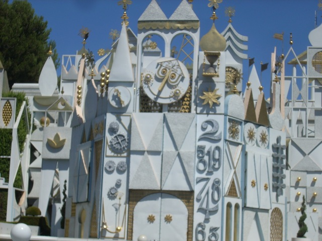
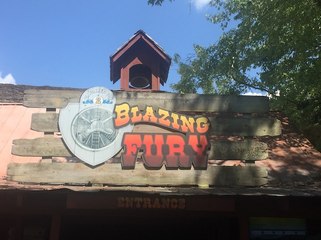
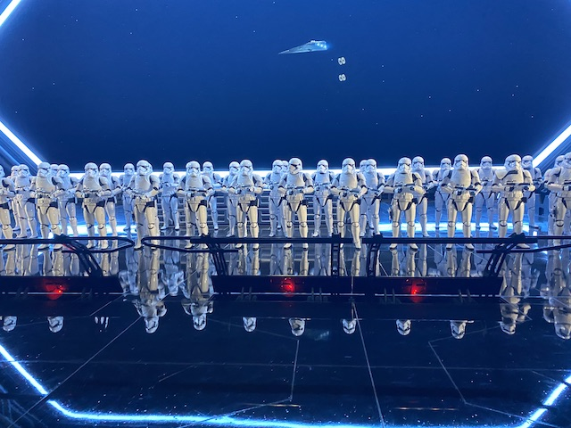
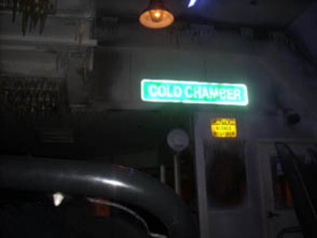
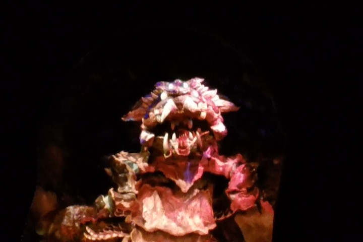

| |
Top 10 Dark Rides

Welcome to an Incrediblecoasters Top 10 List. When we list stuff, we actually explain why. Dark Rides. Dark Rides may not be the main focus of Incrediblecoasters or most people when they think of going to an amusement park, but the General Public knows about the dark ride and in most cases, will expect a dark ride to be at the amusement park they visit. While the first dark rides appeared in the 20s, they were never really special. The first dark rides that ever appeared in any amusement parks were mostly old ghost trains, cheap haunted houses, and stuff like that. While they were fun and still represent the old fashioned classic dark ride, they still never really became the official standard for being a dark ride. That didn't happen until 1955, when Disneyland officially opened up. Disneyland not only reinvented the theme park, but it also invented what we all know as the Fantasyland Dark Ride, in which the ride moves along a track and sees anamatronics. These types of dark rides exploded in the Disney Industry, containing several Fantasyland Dark Rides in all of their parks, and hell, they're still adding more Fantasyland Dark Rides to this very day.
  And once the Fantasyland Dark Ride came, the list of types of dark rides just exploded. Along with the Fantasyland Dark Ride, Water was introduced to the dark ride with the Jungle Cruise ride at both Disneyland and the Walt Disney World Resort as the first boat ride to be turned into a dark ride. The idea to make a traditional fantasyland dark ride, but instead of using a traditional dark ride track, but rather use a boats and fill a track with water was first used on It's a Small World in 1966. Small World was such a success that the next year, Disneyland opened up yet another Disney Classic Dark Ride, Pirates of the Carribean, which also featured boats and a water rather than an a track. Later in the 90s, the first shooting dark ride appeared at Silver Dollar City as Flooded Mine (Fun Dark Ride BTW). While the Shooting Dark Ride didn't catch on at first, the soon spread like Wildfire, appearing at Disney Parks, Universal Parks, and even Six Flags and Cedar Fair Parks now have shooting dark rides. And then there are just several other crazy fun dark rides. But which dark rides are the best? Here's a Top 10 List to show you.
And once the Fantasyland Dark Ride came, the list of types of dark rides just exploded. Along with the Fantasyland Dark Ride, Water was introduced to the dark ride with the Jungle Cruise ride at both Disneyland and the Walt Disney World Resort as the first boat ride to be turned into a dark ride. The idea to make a traditional fantasyland dark ride, but instead of using a traditional dark ride track, but rather use a boats and fill a track with water was first used on It's a Small World in 1966. Small World was such a success that the next year, Disneyland opened up yet another Disney Classic Dark Ride, Pirates of the Carribean, which also featured boats and a water rather than an a track. Later in the 90s, the first shooting dark ride appeared at Silver Dollar City as Flooded Mine (Fun Dark Ride BTW). While the Shooting Dark Ride didn't catch on at first, the soon spread like Wildfire, appearing at Disney Parks, Universal Parks, and even Six Flags and Cedar Fair Parks now have shooting dark rides. And then there are just several other crazy fun dark rides. But which dark rides are the best? Here's a Top 10 List to show you.

#10.

Blazing Fury @
Dollywood
Pigeon Forge, Tennessee, U.S.A
Now before I talk about this ride, let me just say this first. THIS DOES NOT COUNT AS A CREDIT!!! Let me emphasize that. Blazing Fury is NOT a credit. IT IS NOT CREDIT!!! Don't listen to the sign. It is not a roller coaster. It is a dark ride. I mean, if this ride (plus the old Fire in the Hole. But I think the new one might count) counts as a roller coaster just because of its couple drops, then Pirates of the Carribean counts as a shoot the chutes ride just because of its drops. But anyways, Blazing Fury is a really cool dark ride. It starts with getting in the cars, you then roll around the city, as if you were firefighters. Eventually fire does break out, but before you can put it out, you just shout FIRE IN THE HOLE!!! You then go down two drops, the second of which, manages to take you by suprise. I know it used to have a splashdown section right here. But sadly, they got rid of it on that. BOO!!! LAME!!! It's a got a cool theme, fun drops, elements of suprise, and is a great addition to Dollywood. What more do I need to say, other than FIRE IN THE HOLE!!!!!!!!!!

#9.

Pooh's Hunny Hunt @
Tokyo Disney Resort
Urayasy, Chiba, Japan
WHAT THE HELL!!? You knocked off several great dark rides in order to put Pooh's F*cking Hunny Hunt on the list!!? WHY!!!? IT'S A FANTASYLAND DARK RIDE!!! ARE YOU JUST A DIE-HARD WINNIE THE POOH FAN OR WHAT!!? Well, I do like the 1977 Winnie the Pooh movie, but no. That has nothing to do with why Pooh's Hunny Hunt is on this list. The other Disney parks have their own Winnie the Pooh dark rides, and yet, those stay far off the Top 10 Dark Rides List. So it's clearly just something specific to Pooh's Hunny Hunt at Tokyo Disneyland. But what? What the hell is so special about this specific version of Winnie the Pooh that grants it access to the Top 10 Dark Rides? Well, this ride is one of the few rides in the world that uses trackless technology (though its certainly gaining popularity over the years). So basically, this ride has no track, and the cars just know where in the rooms they have to go. So you're not just on a track looking at sets. OK, you're still looking at sets. But it all feels more 3D. You can get up close to the animatronics, and you interact with them more. There are several rooms for you to enjoy. Such as the Tigger Room, where the entire room is just bouncing while "The Wonderful Thing About Tiggers" is playing in Japanese. That part of the ride is just so much fun. But on top of that, the cars all interact with each other. They sort of go into a dance when all the cars interact with each other during the Heffelumps and Woozles part of the ride. This is great. I'm just happy that Disney has FINALLY brought this technology to America. =) Pooh's Hunny Hunt. It may not be the only one anymore, but it's still a damn good dark ride!
 
#8.

Men in Black @
Universal Orlando Resort
Orlando, Florida, U.S.A
Now if you know my taste in dark rides, you'll know that I am not a big fan of shooting dark rides. They aren't really my thing and I really really suck at them. However, if there is one shooting dark ride that I like, it would be, without a doubt, Men in Black. This is much more than just your average run of the mill shooting dark ride. The aliens that you are shooting on Men in Black actually look realistic and aren't just cheap cardboard cut outs or obviously fake anamatronics, these aliens actually have a realistic look to them. That's a big help in your shooting dark ride. It also has some Toy Story Mania spinning action, so that adds more fun. (Oh, and did I mention that you cause this by shooting the other cars?) Yeah. You can't do that on Buzz, now can you. Yeah. This is without a doubt the best shooting dark ride ever, and is just a great addition to the Universal Orlando Resort. Men in Black. It's awesome, even in white.
#7.

Transformers @
Universal Studios Hollywood
Studio City, California, U.S.A
All right. Now Transformers is...an interesting ride. It's intersting in the main way that Transformers came about as California's answer for their lack of a Spiderman ride. Now granted, Transformers would eventually make its way to Orlando, and they'd have both rides. But due to the fact that Transformers uses the Spiderman technology, some have seen it as an alternative, and an inferior alternative. And while I will agree that Spiderman is without a doubt, the superior ride (Spoilers. It's featured down below), Transformers is still a really good ride. I mean, it's technically a simulator. But just like Spiderman, you REALLY feel motion. You REALLY feel like you're flying around. Like you're fighting the Decepticons. It's not just your seat leaning back, or tilting foreward, and all that stuff you see on simulators like Star Tours. It even has the same falling effect that Spiderman has. I think what really puts Transformers behind Spiderman is simply that...Spiderman is a much better story. Ever since Michael Bay did the Transformers movies, which were complete sh*t (and even featured robot balls), it's had a bad rep. So that's (for me at least) part of the reason I'm not as big on Transformers as I am on Spiderman. But even so. It has all this amazing technology, all this motion, and it really makes you feel like you're sucked into the world.
#6.

Radiator Springs Racers @
Disneyland Resort
Anaheim, California, U.S.A
Ok. You knew that this was coming up. Radiator Springs Racers is the latest ride to be included in the Disneyland Resort line up, and man have we been waiting for this ride forever. Ever since I rode Test Track @ Walt Disney World, I knew that Disneyland just HAD to get some ride with the Test Track technology. They just HAD TOO!!!!! Its too good to not take advantage of at all of their parks. Well in 2012, I finally got my wish when the newest part of California Adventure opened up, Carsland, and in that new section, came the dark ride we're speaking of right now. Radiator Springs Racers. This may not be as good or as intense as Test Track, but its still a great dark ride. The whole thing is themed to Cars (least favorite Pixar movie BTW), and you're getting ready to race. But first, you get some fun action in Radiator Springs including a run in with a cop, running away from a train, and a tire change (a really nice effect I must say). Then its time to race, and sadly, its not like on Test Track where they push you to the limits and go up to 65 mph, but its still really fun and my favorite part of the ride. Definetly make sure you check it out when you're at the Disneyland Resort. Just make sure you either get your Fastpass SUPER EARLY or take advantage of the Single Riders Line. Yeah, this ride gets INSANE lines. Be warned.
 
#5.

Indiana Jones @
Disneyland Resort
& Tokyo Disney Resort
Anaheim, California, U.S.A
& Urayasy, Chiba, Japan
Ok. This is pretty obvious. Indiana Jones is a kickass kickass kickass dark ride. I mean, just take a good look at it. You have a a forbidden temple with demon eyes, fire, a giant snake, and a big boulder that is going to crush you to death. What the hell is anyone doing not liking this dark ride? Most dark rides just have go around the track and look at the stuff. But on Indiana Jones, nope. Not at all. Indiana Jones invented a new way for dark rides to work by inventing the Enhanced Motion Vehicle. This allowed the car to go batsh*t crazy around the course, bending on the curves, and bouncing to enhance the experience. Now while some people don't like this since it adds to roughness, I just have this to say. Grow some balls!!! If the EMV is too much for you to handle, then just stick to Small World (Ok, I wouldn't suggest that to anyone. I'm not THAT cruel). Now again, the Tokyo Disney Sea version of Indiana Jones is slightly better. I love the fire ring effect, and I do really like the Crystal Skull (Best of all, it has no connection to sh*tty Indiana Jones 4). So yeah. That's technically slightly better. But much like with Fire in the Hole and Blazing Fury, I don't want to rank CA Indiana Jones at #5, and Tokyo Indiana Jones at #4 and knock off Toy Story ManiaBut at the same time, Indiana Jones. It's almost worth looking into Mara's eyes for.

#4.

Rise of the Resistance @
Disneyland Resort
Anaheim, California, U.S.A
Ok. Now I'm sure this'll be a split decision. With some people upset that this is on the list at all. OVERHYPED RIDE THAT'S NOTHING BUT STAR WARS!!? SERIOUSLY!!? WHY!!? And others upset that it's only at #4 and not #1. WHAT!!? THIS IS THE MOST COMPLEX AND WELL THEMED DARK RIDE ON THE PLANET!!! HOW CAN THERE BE THREE BETTER RIDES THAN IT!!? Well, I do have to admit. This is undeniably one of the most complex dark rides in the world. Hell, it's probably one of the most complex rides in the world period. In fact, I'm sure some people would argue that it should be excluded from the list entirely as it's own category. Well, first of all, I also include walk through stuff. So....it's DEFINATELY a dark ride in my book. But....yeah. This ride features so many different aspects to it. It's marketed as part trackless dark ride (Super happy to FINALLY see the Pooh Technology come to America), part walk through (which I count as dark rides), part motion simulator (again, I count those as dark rides), and part DROP RIDE!!? WHAT!!!? Yeah. Apparently after I rode, I learned that there's a drop ride aspect to it! I felt a falling sensation. But....I felt on par with that on Spiderman (Coming up later on on this Top 10 List). But....NO!!! THAT'S A DROP TOWER!!! And while I'm not the biggest Star Wars fanatic out there, it is really cool to be a part of the Star Wars Army and fighting against the Resistance. It's just a really cool and trippy experience. If you're even a little bit of a Star Wars fan (even a casual fan. If you enjoy any of the Star Wars movies basically), then this is something you GOTTA check out. Someone's gotta stop the Empire after all.
#3.

The Amazing Adventures of Spiderman @
Universal Orlando Resort
Orlando, Florida, U.S.A
Of course Spiderman made the list. I mean, if you didn't think that Spiderman would make the list, then you obviously don't know what a good dark ride is. This ride is just amazing. While it may technically be a motion simulator, it sure as hell isn't like any other motion simulator in the world. This isn't the type of motion simulator they have in museums. No no no. This is much better. Not only is it in 3D, but the ride itself is actually on a track, so that it moves as well as simulates. It's very complicated to explain. Much more so than the EVMs on Indiana Jones. But the point is that this stuff works. It really feels like motion. It feels much more motion like here than on just about any other simulator. Here, you really feel like you're climbing up a building and falling to the ground. Yeah. That actually works on Spiderman. Try having that effect on a Star Tours type of simulator, and I'd guarantee failure or else I'd do something totally insane. Spiderman is good. It's really good. Hell, I almost gave it the #2 dark ride spot. I was really debating it, but then I leaned against it. So what wound up edging out Spiderman for the #2 spot?
#2.

Test Track @
Walt Disney World Resort
Lake Buena Vista, Florida, U.S.A
It was really hard for me to choose which was better. Spiderman or Test Track. I eventually went with Test Track simply because I just love this ride's theme. I mean, what could possibly be a better theme than crashing cars? So yeah. Aside from just having a great theme, this dark ride doesn't really behave like any other dark ride, which always makes for a better ride. Now it doesn't just bounce or jiggle like Indiana Jones ort dance around like Pooh's Hunny Hunt or...do whatever Spiderman does, but it does do a lot of interesting things. It can go from being a traditional tracked dark ride, to being really rough, to randomly accelerating and decelerating. It does everything. It's smooth, rough, fast, slow, hot, and cold, all at the same time. And of course, we have the ending finale, in which we accelerate up to 65 mph and just zoom around outside. I love that. I just love that. Test Track. It does everything. But wait. This is only the #2 Dark Ride. Which means something is better than Test Track. Hmm. What other rides use the same technology as Test Track?

#1.

Journey to the Center of the Earth @
Tokyo Disney Resort
Urayasy, Chiba, Japan
Yeah. This is the best dark ride ever. It's just not even close. Yeah. Spiderman and Test Track are both amazing rides. I love both of them, and for a while, it was really hard to choose between the two of them. But what is clear, is that Journey to the Center of the Earth beats them both. I already gushed and raved about how great the Test Track technology is on both Test Track as well as on Radiator Springs Racers. And yeah. I absolutely love it here. All the good things I said about the technology, it all automatically applies to Journey to the Center of the Earth. But in a way, Test Track has more track and goes faster. So....why is Journey to the Center of the Earth better? Why is this #1? THEMING!!! THE THEMING ON THIS RIDE IS ABSOLUTELY INCREDIBLE!!! I mean, that lava monster animatronic. HOLY CRAP!! That has to be the coolest and possibly most complex animatronic used on any dark ride! I just love the lava monster! He is so awesome! The theme of the ride itself is just really cool. And on top of all that, when you do speed up, and break out of the volcano, and get that view of Tokyo Disney Sea, it's just bliss. I love everything about this ride.

So now I'm sure you know what you're thinking. "Wow. That was the list. That is so wrong." Well no. First of all, this list can not be entirely accurate since I haven't been on every single dark ride in the world, so until I do, this list will never truely be accurate. And new ones will be built, so technically, no list will last forever. But really, this list doesn't need to change much. Spiderman and Test Track are both considered to be some of the best dark rides on this planet by many of the most well travelled enthusiasts who have visited amusement parks around the world. While there may be some that easily replace those on the lower end of the list, I think it's safe to say that Spiderman and Test Track aren't going anywhere. And even so, this list gives props to 10 fantastic dark rides throughout the world that just about everyone should ride sometime. Especially the Top 3. ;)
|